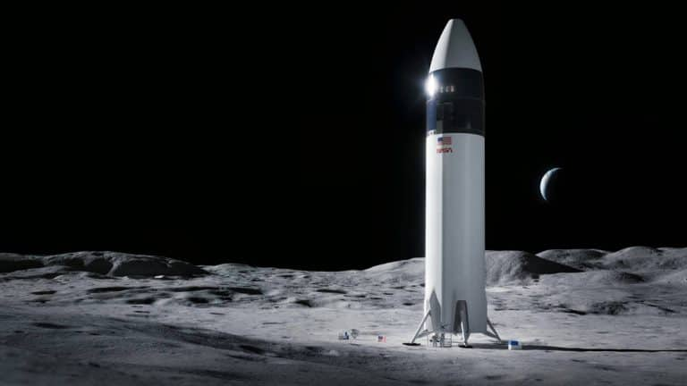
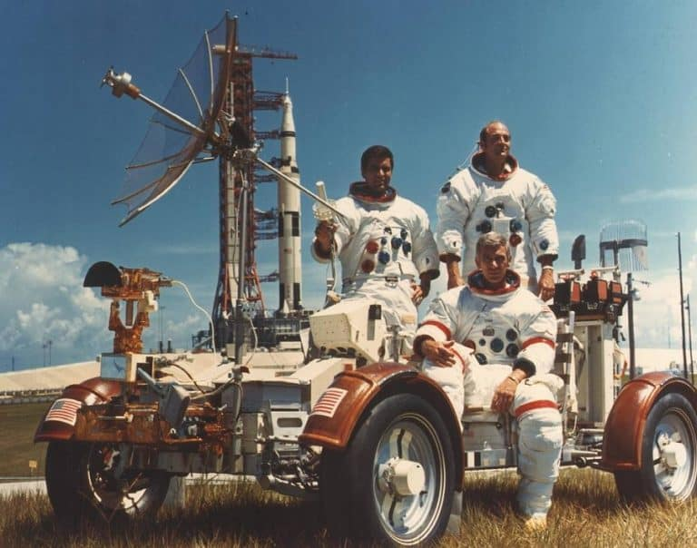
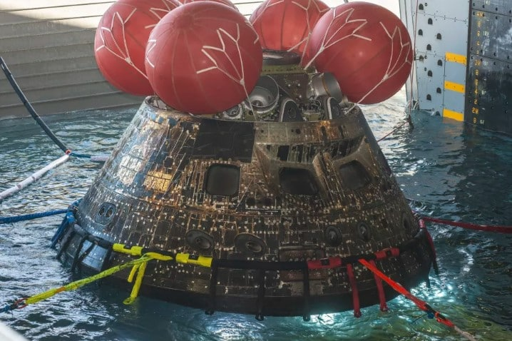
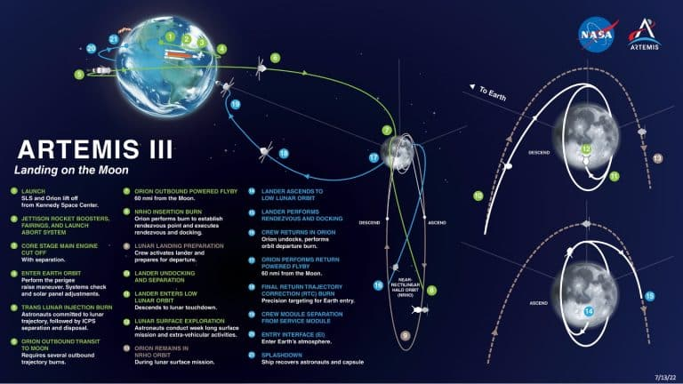
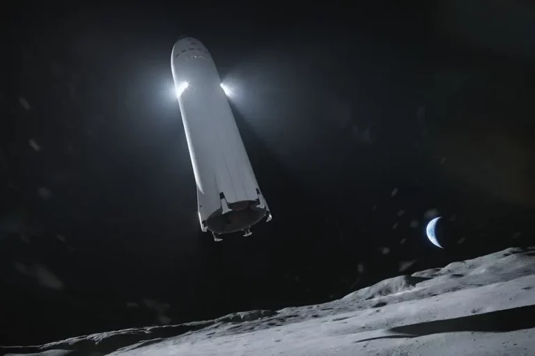

Depois das missões Artemis 1 e 2, Artemis 3 entrará para a história como o primeiro retorno da humanidade à Lua em mais de 50 anos
Ilustração do projeto de sistema do pouso humano da SpaceX Starship. Créditos: SpaceX
Em 7 de dezembro de 1972, três astronautas foram lançados a bordo do foguete Saturno V para aquela que se tornou a última vez que a humanidade colocou os pés na Lua.
A tripulação era composta por Eugene (Gene) A. Cernan, como comandante, Harrison H. Schmitt, como piloto do módulo lunar Challenger, e Ronald E. Evans, como piloto do módulo de comando América.
A tripulação era composta por Eugene (Gene) A. Cernan, como comandante, Harrison H. Schmitt, como piloto do módulo lunar Challenger, e Ronald E. Evans, como piloto do módulo de comando América.
Harrison H. Schmitt, Ronald E. Evans e Eugene (Gene) A. Cernan sobre um simulador do Veículo Lunar Errante (LRV) no dia do lançamento da missão Apollo 17 – a última vez que a humanidade pisou na Lua. Imagem: NASA
No dia 11, enquanto Evans permaneceu em órbita, Cernan e Schmitt entraram para a história como os últimos dos 12 homens que pisaram na superfície lunar. Passados exatos 50 anos, a missão Artemis 1 – a primeira do novo programa de exploração lunar da NASA – foi concluída com sucesso, no dia 11 de dezembro de 2022. O principal objetivo desse voo não tripulado era circundar nosso satélite natural para testar tecnologias essenciais para todas as outras missões do Programa Artemis, como o megacomplexo veicular formado pelo foguete Space Launch System (SLS) e a cápsula Orion, além dos sistemas de comunicação e de suporte de vida.
Chegada da cápsula Orion ao porto de San Diego, na Califórnia em 11 de dezembro de 2022. Créditos: NASA
Depois deste, o próximo voo é esperado para 2024, com tripulantes a bordo da missão Artemis 2, que foi projetada para repetir o mesmo circuito, também sem chegar a pousar em solo lunar. Isso, de fato, só deve acontecer entre 2025 e 2026, com a Artemis 3, que finalmente levará a humanidade a pôr os pés novamente na Lua. Na última sexta-feira (13), a NASA emitiu uma atualização com mais detalhes sobre a missão.
Quatro astronautas partirão da Plataforma de Lançamento 39B no Centro Espacial Kennedy, na Flórida, no topo do SLS, o único foguete capaz de enviar a cápsula Orion, sua tripulação e seus suprimentos para a Lua em um único voo. A tripulação será selecionada entre os mais diversos corpos de astronautas da história, cada um equipado com habilidades únicas e intensamente treinado. Primeiro, a tripulação será lançada para a órbita da Terra, onde realizará verificações de sistemas e ajustes do painel solar da Orion. Então, um poderoso impulso do estágio de propulsão criogênica interino do SLS ajudará a cápsula a realizar uma manobra de injeção translunar, definindo seu curso para a Lua.
Durante vários dias, a tripulação viajará em direção à Lua e realizará queimaduras corretivas do motor para interceptar o campo gravitacional do nosso satélite natural. No momento e local certos, a Orion realizará uma série de duas queimas de motor para se colocar em uma órbita de halo quase retilíneo (NRHO). De centenas de órbitas potenciais, a NASA selecionou a NRHO para atingir os objetivos de longo prazo do Programa Artemis. O NRHO fornecerá comunicações quase constantes com a Terra e acesso a locais ] em toda a Lua.
De centenas de órbitas potenciais, a NASA selecionou a NRHO para atingir os objetivos de longo prazo do Programa Artemis. O NRHO fornecerá comunicações quase constantes com a Terra e acesso a locais em toda a Lua.
Mapa da Missão Artemis 3. Créditos: NASA
A NASA selecionou a SpaceX para fornecer o sistema de pouso humano que transportará os astronautas da Artemis 3 de dentro da Orion em órbita lunar para a superfície da Lua e vice-versa. Segundo a agência espacial norte-americana, a SpaceX planeja usar um conceito único de operações para aumentar a eficiência geral de seu lander. Após uma série de testes, a empresa de Elon Musk voará pelo menos uma missão de demonstração não tripulada que pousará a Starship na superfície lunar. Quando a Starship atender a todos os requisitos da NASA e aos altos padrões de segurança da tripulação, ela estará pronta para sua primeira missão Artemis.
Representação artística do módulo de pouso Starship, da SpaceX, chegando à Lua. Imagem: SpaceX
Para a Artemis de exploração lunar humana, a NASA está está em locais ao redor do Polo Sul. Condições extremas e contrastantes tornam essa área um local desafiador para os terráqueos pousarem, viverem e trabalharem, mas as características únicas da região são promissoras para descobertas científicas sem precedentes no espaço profundo. Usando tecnologia avançada, incluindo sistemas autônomos, a tripulação dentro da Starship pousará em um local cuidadosamente selecionado dentro de um raio de 100 metros. Após o pouso, a primeira tarefa da tripulação de superfície será garantir que todos os sistemas estejam prontos para sua estadia na Lua. Em seguida, eles vão descansar, se alimentar e recarregar as energias para o primeiro dia completo da expedição. Vestindo trajes fornecidos pela Axiom Space, os astronautas conduzirão experimentos dentro do módulo de pouso e também farão caminhadas na superfície lunar para tirar fotos, fazer vídeos, pesquisar a geologia, coletar amostras e outras funções. Vestindo trajes fornecidos pela Axiom Space, os astronautas conduzirão experimentosdentro do módulo e pouso e também farão caminhadas na superfície lunar para tirar fotoss, fazer vídeos, pesquisar a geologia, coletar amostras e outras funções. As equipes de controle da missão no solo estarão em contato com a tripulação enquanto transmitem o que veem, ouvem e sentem. Através da cobertura da missão e da capacidade de enviar imagens e vídeos de alta qualidade para o solo com tecnologia de comunicação avançada, eles estarão compartilhando uma nova experiência humana única com o mundo.
Quando sua expedição estiver concluída, os dois astronautas decolarão da superfície da Lua e voltarão para a NRHO na Starship para se reunir com seus companheiros de tripulação na cápsula Orion. Após a atracação, a tripulação passará até cinco dias em órbita, transferindo amostras entre os veículos e se preparando para a viagem de volta à Terra. Quando chegarem ao ponto de partida ideal da NRHO, eles desacoplarão e inflamarão os motores da Orion, lançando a espaçonave pela Lua e permitindo que ela parta em direção à Terra. A tripulação viajará cerca de 40 mil km/h durante a reentrada na atmosfera da Terra. Equipada com 11 paraquedas, a espaçonave mergulhará no Oceano Pacífico, onde será recuperada, assim como a tripulação, com o apoio da Guarda Costeira dos EUA e da Marinha dos EUA.